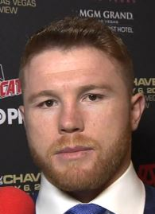
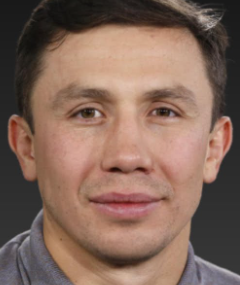
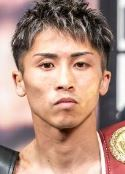

Zašto bi trebali da postanete deo našeg tima
Fizička Snaga i Kondicija
Boks je jedan od najefikasnijih sportova za poboljšanje fizičke snage, izdržljivosti i opšte kondicije. Redovnim treniranjem boksa, telo postaje snažnije, brže i agilnije. Boks uključuje intenzivne vežbe koje angažuju skoro sve mišićne grupe u telu. Poboljšanje snage: Boks pomaže u razvoju snage, jer uključuje mnoge vežbe za ruke, noge, leđa i stomak. Kardiovaskularna kondicija: Kardio vežbe u boksu poboljšavaju funkciju srca i pluća, povećavajući kapacitet tela za veće napore. Brzina i agilnost: Trening boksa uključuje rad na brzini i refleksima, što čini telo bržim i agilnijim.
Mentalna Snaga i Fokus
Fokusiran, smiren i imati veliku mentalnu izdržljivost. Vežbanje boksa pomaže ti da razviješ mentalnu disciplinu, poboljšaš koncentraciju i povećaš samopouzdanje. Izgradnja samopouzdanja: Boks ti daje osećaj moći i kontrole, što se odražava u svakodnevnom životu. Osećaj postignuća nakon napornog treninga povećava tvoje poverenje u sebe. Suočavanje sa stresom: Boks je odličan način da se oslobodiš stresa i negativnih emocija, jer fizičko iscrpljivanje ima terapeutski učinak na psihu. Mentalna izdržljivost: Boks te uči kako da se suočiš sa izazovima i nepopustljivo nastaviš, čak i kada se suočavaš sa fizičkim i psihološkim naporima.
Razvijanje Discipline i Samokontrole
Boks zahteva visoki nivo discipline. Bez discipline, ne možeš napredovati. Treninzi su naporni, a napredak dolazi samo kroz upornost i doslednost. Struktura i rutina: Redovan trening u boksu stvara strukturu u životu i uči te vrednosti kao što su odgovornost i doslednost. Samokontrola: Kroz treninge, boks ti pomaže da poboljšaš svoju sposobnost da kontrolišeš svoje telo i um. Naučićeš kako da upravljaš svojim emocijama, kako da se nosiš sa frustracijama i izazovima.

Canelo Alvarez
I'm honored and blessed by God to be in the sport I love, and I want to accomplish all the goals I set in the sport of boxing - to be successful and make history. Canelo Alvarez

Gennady Golovkin
We're all going to make mistakes; they're inevitable. It's what you do after these mistakes that matters.

Naoya Inoue
Champions don’t wait for opportunities; they create them.
TAKO DA...
Boks nije samo fizički izazov – to je put ka zdravlju, mentalnoj snazi, samopouzdanju i ličnom razvoju. Bez obzira da li želiš da poboljšaš svoju kondiciju, naučiš samoodbranu, izgradiš disciplinu ili se jednostavno zabaviš, boks ti nudi sve te benefite. Boks je sport u kojem se uvek možeš poboljšati, a svaki trening donosi nove izazove i mogućnosti za rast. Zato, upisivanje boksa nije samo korak ka boljoj fizičkoj formi, već i ka boljoj verziji tebe – fizički, mentalno i emocionalno